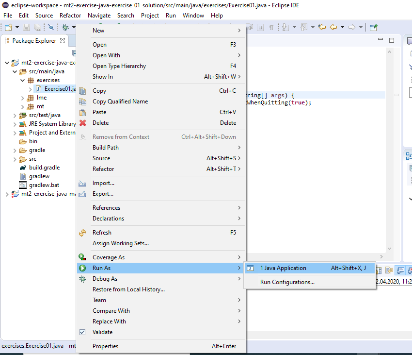

Signals and Convolution
Submission deadline: 11.05.20 23:59h
Please ensure that all files you created also contain your name and your IDM ID and also your partner's name and IDM ID if you're not working alone.
Each exercise has 10 points. You have to achieve 30 of 60 points in six homework exercises to pass the module.
ImageJ
The image processing program we want to use during this semester is called ImageJ. It was developed at the US National Institutes of Health and is used nowadays especially in research for medical and biological images.
If you want to, you can download a stand-alone version of the program here.
Getting started
ImageJ can also be used as a Java library. We already created a Java project that uses ImageJ. You can download it from https://github.com/mt2-erlangen/exercises-ss2021 and import with the IDE of your choice:
Tasks
You should now be able to execute the file src/main/java/exercises/Exercise01.java


The following code is opening the ImageJ main window and exits the running program when the window is closed.
public class Exercise01 {
public static void main(String[] args) {
(new ij.ImageJ()).exitWhenQuitting(true);
}
}
IntelliJ will only allow to run Exercise01 when there are no errors in the project. You can just out-comment the method lme.Algorithms.convolution1d until you implemented your Signal class.
Signal.java
4 Points
As a first step, we will implement the class Signal
which should hold a signal of finite length.
Create the file src/main/java/mt/Signal.java.
// <your name> <your idm>
// <your partner's name> <your partner's idm> (if you submit with a group partner)
package mt;
import lme.DisplayUtils;
import ij.gui.Plot;
public class Signal {
}
Signal should have the following members
protected float[] buffer; // Array to store signal values
protected String name; // Name of the signal
protected int minIndex; // Index of first array element (should be 0 for signals)
Implement two constructors for Signal
public Signal(int length, String name) // Create signal with a certain length (set values later)
public Signal(float[] buffer, String name) // Create a signal from a provided array
Implement the following getter methods for Signal
public int size() // Size of the signal
public float[] buffer() // Get the internal array
public int minIndex() // Get lowest index of signal (that is stored in buffer)
public int maxIndex() // Get highest index of signal (that is stored in buffer)
public String name() // Get the name of the signal
Next, we want to visualize our Signal in the method show. You can use provided function lme.DisplayUtils.showArray.
To test it, create a Signal with arbitray values in the main method of Exercise01 and call its show method.
public void show() {
DisplayUtils.showArray(this.buffer, this.name, /*start index=*/0, /*distance between values=*/1);
}
In our black board exercises, we agreed that we want to continue our signals with zeros where we don't have any values stored.
If we access indices of our Signal with values smaller than minIndex() or larger maxIndex() we want to return 0.0f.
If a user accesses an index between minIndex() and maxIndex() we want to return the corresponding value stored in our array.

Implement the method atIndex and setAtIndex. Please be aware that minIndex can be smaller than 0 for subclasses of Signal.
If setAtIndex is called with an invalid index (smaller than minIndex or greater than maxIndex), it's ok for the program to crash.
This should not happen for atIndex.
public float atIndex(int i)
public void setAtIndex(int i, float value)
You can check the correctness of atIndex/setAtIndex with the test testAtIndex in file src/test/java/SignalTests.java.
LinearFilter.java
3 Points
Implement LinearFilter in file src/main/java/LinearFilter.java as a subclass of Signal.
LinearFilter should work like Signal except its minIndex should be at - floor(coefficients.length/2) as in the exercise slides.

LinearFilter should have a constructor that checks that coefficients is an array of odd size or throws an error otherwise (any error is ok).
public LinearFilter(float[] coefficients, String name)
and a method that executes the discrete convolution on another Signal input and returns an output of same size.
public Signal apply(Signal input);
You should be able to directly use the formula from the exercise slides (f is the input signal, h our filter, $L$ the filter length)
$$K = \lfloor L/2 \rfloor$$ $$g[k] = \sum_{\kappa=-K}^{K} f[k-\kappa] \cdot h[ \kappa ]$$
or with our minIndex/maxIndex methods for each index $k$ of the output signal.
$$g[k] = \sum_{\kappa=h.\text{minIndex}}^{h.\text{maxIndex}} f[k-\kappa] \cdot h[\kappa] $$
Be sure that you use atIndex to access the values of input and the filter.

You can test your convolution function with the tests provided in src/test/java/LinearFilterTests.java.
Good test cases are:
{0,0,1,0,0}: this filter should not change your signal at all{0,1,0,0,0}: this filter should move your signal one value to the left{0,0,0,1,0}: this filter should move your signal one value to the right
Questions
3 Points
In this task we want to convolve a test Signal with three different linear filters.
Filter the signal $f[k]$ Signal(new float[]{0, 0, 0, 0, 0, 0, 0, 0, 0, 1, 1, 1, 1, 1, 1, 1, 1, 0, 0, 0, 0, 0, 0, 0, 0, 0}, "f(k)")
with filters
- $h_1[k]$:
{1.0f/3 ,1/3.f ,1/3.f}, - $h_2[k]$:
{1/5.f, 1/5.f , 1/5.f, 1/5.f, 1/5.f}, - $h_3[k]$:
{0.5f, 0, -0.5f}.
Save the images of the input signal and filtered results (recommended filetype: png).
Create a PDF document (e.g. with Word or LibreOffice) with those images in which you describe briefly how the filters modified the input signal and why.
Submitting
Please ensure that all files you created also contain your name and your IDM ID and also your partner's name and IDM ID if you're not working alone.
Then, compress your source code folder src to a zip archive (src.zip) and submit it and your PDF document via StudOn!